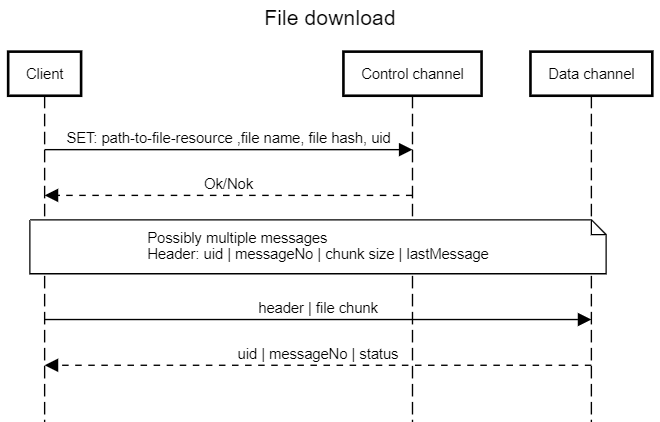

The Vehicle Information Service Specification (VISS) is a
service for accessing vehicle information, signals from sensors
on control units within a vehicle's network. It exposes this
information using a hierarchical tree like taxonomy defined in
COVESA Vehicle Signal Specification (VSS). The service provides
this information in JSON format. The service may reside in the
vehicle, or on servers in the internet with information
already brought off the vehicle.
This specification describes a third version of VISS which
has been implemented and deployed on production vehicles.
The first version of VISS only supported WebSocket as a
transport protocol, the second version is generalized to work
across different protocols as some are better suited for
different use cases.
The second version added support for the HTTP and MQTT transport
protocols, subscription capabilities was improved and an
access control solution was added.
There are three parts to this specification, CORE, [[TRANSPORT]], and [[PAYLOAD ENCODING]]. This document, the VISS version 3.0 CORE specification,
describes the VISSv3.0 messaging layer.
The VISSv3.0 transport protocol examples document describes the deviations from the CORE definitions that are used in some transport protocols.
It also examplifies the JSON primary payload format using the Websocket payloads.
The VISSv3.0 payload encoding document describes payload encoding designs that may be applied e. g. for payloads in transit.
Introduction
This document describes the messaging API for the VISS protocol.
This includes the messaging layer and set of rules for structuring data.
The specification is agnostic to which transport protocol that is used as long as it conforms to this messaging API and data rule set.
Transport protocols that cannot conform to the entire CORE specification can still be conformant by describing their deviations in the
[[TRANSPORT]] specification.
The primary payload data format is JSON. The JSON schema () defines all of the payloads.
If a transport protocol uses a different payload encoding, such as gRPC,
or a more bandwidth efficient data representation is desired, then this encoding may be defined in the [[PAYLOAD ENCODING]] document.
This encoding must contain a solution for both encoding of the JSON payloads and decoding back to the JSON format.
A client MUST be able to access the message payload in the JSON format.
The messages are exchanged between a server implementation holding the representation of data
and a client using the data as shown in the figure below, where the payload also is encoded when in transit over the transport protocol.
VISSv3 payload encoding overview.
The VISSv3.0 messaging layer builds on RESTful principles for the method exchange via the interface ().
The VISSv3.0 data structuring rules (VSS Rule set)
are the same through all transport protocols.
The basis for structuring data held by a server is a tree structure.
Terminology
The acronym 'VISSv3.0' is used to refer to this document, the VISS version 3.0 specification.
The acronym 'VSS' is used to refer to the 'Vehicle Signal Specification'
which is hosted by COVESA.
The term 'WebSocket' when used in this document, is as defined in the
W3C WebSocket API and [[RFC6455]], the WebSocket Protocol.
Definitions
client
An entity that works with data managed by a server.
server
An entity that manages and offers access to data.
success response
The message being returned by the server to the client when no error is encountered. These are specific per request type.
error message
The message being returned by the server to the client when an error is encountered. It can be a synchronous response message,
or an asynchrounous event message.
data point
A structure containing one or more value, timestamp tuplets.
value
The data that is associated with one or more VSS nodes. Regardless of its data type,
a single data item is always represented as a string in message payloads.
timestamp
A date and time representation. See chapter .
filter
Additional information to help the server in the selection of data for the client.
authorization
A token providing a verifiable proof that the client may be authorized access to the requested data.
This may be represented by a token handle provided by the server.
subscriptionId
A handle identifying a subscription session.
requestId
Unique id value specified by the client.
Returned by the server in the response and used by the client to link the request and response messages.
The value MAY be an integer or a Universally Unique Identifier (UUID).
purpose
A purpose is one of the short text entries from the .
ECF
External Consent Framework. An agent that is responsible for inquiring a data owner about consent for client access to data.
Data Model
The service is intended for use with a tree-like logical taxonomy to represent the vehicle data.
An illustrative example of such a tree structure is shown in Figure 1.
While it is meant to support conforming taxonomies it was created principally with the
Vehicle Signal Specification (VSS) in mind.
For more details, see the VSS documentation.
Depending on how VISS is being used, for instance to serve data already off-boarded and residing in the cloud,
it may make sense to allow sensor values to be updated by sending a 'set' request.
When VISS is directly on the vehicle, values reported by sensors are authoritative and should be read-only within VISS.
Implementations should handle set requests appropriately for their situation and respond with appropriate success or error messages accordingly.
Example VSS 2.0 tree.
Addressing
Addressing of resources is done using URIs as defined in [[RFC3987]].
The scheme describes the protocol to use to reach the addressed resource.
For supported protocols, see the transport protocols in [[TRANSPORT]] specification.
The authority describes where to reach the resource, for more details see .
The path addresses a specific service within the resource, for more details see .
The query contains further information related to the addressed service, see .
There are potentially three resources for which a client needs a URI, see :
VISSv3 server.
Access grant token server.
Access token server.
Authority URI Component
The authority component of the URI consists of an IP address or a domain name followed by a colon and a port number.
IP address / domain name
Depending on the deployment of a resource, either in the cloud or in a vehicle, they will have a domain name or an IP address, respectively.
A client is expected to obtain this part of the authority component via an interaction with the
ecosystem manager. The details of this interaction is out of scope for this specification.
Port number
This section is non-normative.
The VISSv3 server shall use the following port numbers for the different transport protocols.
HTTP port number = 443.
Websocket port number = 6443.
MQTT port number = 8883.
The access grant token server shall use the port number 7443.
The access token server shall use the port number 8443.
A client may be provisioned with other port numbers than the above specified in its interaction
to obtain the other parts of the authority component, see .
Path URI Component
The path URI component definition differs between the three resources.
For the VISSv3 server the definition is as follows.
The path consists of a sequence of VSS node names separated by a delimiter. VSS specifies the dot (.) as delimiter,
which therefore is the recommended choice also in this specification.
However, in HTTP URLs the conventional delimiter is slash (/), therefore also this delimiter is supported.
To exemplify, the path expression from traversing the nodes Vehicle, Car, Engine, RPM can be "Vehicle.Car.Engine.RPM",
or "Vehicle/Car/Engine/RPM". A mix of delimiters in the same path expression SHOULD be avoided.
The path MUST not contain any wildcard characters ("*"), for such needs see .
For the access grant token server the path is "agts".
For the access token server the path is "ats".
Data representation
A single data point is in the message payload represented by a value and an associated timestamp,
in JSON represented by two key-value pairs with the key names "value" and "ts".
The "ts" value MUST be a string as specified in .
The "value" value MUST be represented as a string for simple datatypes.
If the value is an array it MUST be represented as a JSON array of strings.
In the case the value is a struct complex datatype it MUST be represented as a JSON object, see below.
For supported datatypes see VSS Data Types.
Number values MUST follow the number formats as specified in [[RFC8259]], but as stated above represented as a string.
Boolean values MUST be represented by either of the strings "true" or "false".
The struct complex datatype MUST be represented as a JSON object as shown below.
A struct with the following declaration
struct {
field1 datatype
field2 datatype
}
is represented by the following JSON object
{"field1":"X", "field2":"Y"}
where X and Y are the actual values of respective datatype.
The datatype of a field of the struct may be any datatype supported by VSS, including a struct.
For representation of multiple data points, see .
If data is represented incorrectly, then an error message with number 400, and reason "Bad data" MUST be returned.
A specific case of this is if an array of data elements does not contain the number expected by the server.
The server MAY then respond successfully, and follow a proprietary recovery policy,
or it MAY respond with error number 400, and reason "Invalid array size".
Interface
This chapter describes the different methods and its arguments that govern the communication between a client and the server.
Methods
The transport protocols used to implement these methods MUST implement the Read and Update methods,
and MAY implement the Subscribe, Unsubscribe, and Subscription methods.
Read
Purpose: Get one or more values addressed by the given path.
The client MAY have to obtain an authorization token before being able to access the values.
If the server is able to satisfy the request it MUST return a success response.
If the server is unable to fulfil the request, then the server MUST return an error message.
Arguments, of which path is mandatory:
path The path as defined in VSS to a node in the VSS tree.
filter Additional information defining the requested data.
authorization A handle representing the authorization token.
timestamp The time of the server request execution.
Update
Purpose: Provide an altered value to the vehicle signal addressed by the path.
The client MAY have to obtain an authorization token before being able to update the vehicle signal.
If the server is able to satisfy the request it MUST return a success response, else it MUST return an error message.
Only actuator type signals can be updated.
Please note that a success response does not guarantee that the actuation attempt to change to the updated target value has, or will, succeed.
A client may monitor the actuation progress through subsequent reads of the actuator value.
Arguments, of which path and value are mandatory:
path The path as defined in VSS to a leaf node in the VSS tree.
value The value by which the vehicle signal addressed by the path will be updated to.
Success response, of which authorization is optional:
authorization A handle representing the authorization token.
timestamp The time of the server request execution. This may not be the same as the final update time of the signal.
Subscribe
Purpose: Get asynchronous messages containing the value(s) addressed by the path.
The triggering rules for issuing the event messages are set by the filter data.
The client MAY have to obtain an authorization token before being able to subscribe to the vehicle signal(s).
The server MUST issue an event message if a trigger rule is fulfilled.
If the server is able to satisfy the request it MUST return a success response.
If the server is unable to fulfil the request, then the server MUST return an error message.
If an error occurs during the subscription period, the server SHOULD return an error message.
Arguments, of which path and filter are mandatory:
path The path as defined in VSS to a node in the VSS tree.
filter The rule set describing triggering criterias for issuance of asynchronous event messages.
Success response, of which authorization is optional:
authorization A handle representing the authorization token.
subscriptionId A handle identifying event messages associated with the subscription.
timestamp The start time for the subscription period.
Unsubscribe
Purpose: Termination of the subscription period started by a previous subscribe request.
If the server is able to satisfy the request it MUST return a success response,
and it MUST stop issuing event messages associated to the subscription handle.
If the server is unable to fulfil the request, then the server MUST return an error message.
timestamp The stop time for the subscription period.
Subscription
Purpose: Asynchronous client event message issued according to the subscribe request trigger rules.
The server MUST issue an event message when a triggering rule associated with the subscription is met.
If the server cannot fulfill the triggering rules it MUST issue an error message and terminate the subscription.
timestamp The time of the server subscription execution.
Error Message
The server MUST inform a client about errors ocurring in interactions between the two, whether it is in a synchronous
error response, or an asynchronous error event as a result of a previous subscribe.
For transport protocols which do not control the logical linking between request and response messages it may not be possible to link
an error message to the correct client request.
In cases like this the server may omit sending an error message.
The error message has three arguments, of which subscriptionId is mandatory only for error events.
In the case of an error event being issued by the server, the associated subscription session SHALL thereafter be terminated by the server.
timestamp The time of the server execution leading to the error.
Error Information
The error information has three components - a number, a reason, and a description.
The number MUST always be part of the error information, while the reason and description components MAY be a part of it.
number See the status codes as defined in [[TRANSPORT]].
reason See the status codes as defined in [[TRANSPORT]].
description See the status codes as defined in [[TRANSPORT]].
Timestamps
Timestamps in transport payloads MUST conform to the [[ISO8601]] standard, using the UTC format with a trailing Z.
Time resolution SHALL at least be seconds, with subsecond resolution as an optional degree of precision when desired.
The time and date format shall be as shown below, where the sub-second data and delimiter is optional.
YYYY-MM-DDTHH:MM:SS.ssssssZ
The exceptions to this are timestamps within tokens which MUST conform to Unix time,
or if timestamp data compression is applied.
Security Considerations
Transport security
Transport protocols supported by this specification MUST make use of TLS v1.2 as defined in [[RFC5246]].
Data security
The makes it possible to apply restrictions on the data access for clients that are
granted access on the transport protocol level.
Privacy Considerations
In addition to some privacy provisions within the specification itself, COVESA and W3C have activities seeking
to establish systems and guidelines to provide further considerations for handling of information.
For some uses, such as when information is only referenced within the vehicle not sent
off nor persisting between restarts, there should be little to no privacy concerns.
This specification has granular access control capabilities to limit what information an application may access.
All information sent from a VISS service to client application must be transported over an
encrypted protocol to help protect privacy.
A client accessing vehicle data may require consent from whoever is deemed authoritative for a given
jurisdiction and ownership situation.
This specification enables an External Consent Framework to connect to a VISS server to realize this functionality,
see .
That consent should be revocable. Revoking it is outside the scope of this specification,
it is expected to be handled out of band and in some cases by regulations and contractual commitments.
Filter Request
Filtering is a mechanism to refine a client request, in order to more precisely control what is returned in a response.
Filtering can be applied in read requests and in subscribe requests.
A request where filtering is applied has the following structure
for the HTTP protocol:
GET /<vsspath>?filter=<filter-expression>
for any protocol using the primary JSON payload format:
filter-expression contains the filter instructions.
The filter expression has the object format as shown below. For the case of an optional second object of this type,
these are enclosed in an array expression.
{"variant":"<x>", "parameter":"<y>"}
where
variant: the key name for the filter operation variant, which can have one of the values:
paths:
one or more relative paths. In the case of several paths an array expression shall be used.
timebased:
data is captured repeatedly with a fixed period time.
range:
data is captured when values are in the given range.
change:
data is captured when the value since last capture has changed more than a fixed value.
curvelog:
captured data is processed according to the
curve logging algorithm before being sent to client.
history:
captured data from a time period from current time and backwards in time.
metadata:
the response contains the VSS metadata of the addressed sub-tree.
parameter: the key name for the optional configuration data that the filter operation requires.
The parameter data varies depending on the variant,
is enclosed in one object, or optionally an array of two objects, and is described in the following chapters.
The server MUST support the timebased and change variants, the other variants are optional.
In the JSON object, the key-value pairs "variant" and "parameter" must always be present.
The JSON expression may consist of maximum one object with variant "paths", plus maximum one object with any other supported variant,
which are then logically combined as with an AND operator.
The variants timebased, range, change, and curvelog are only applicable for subscription requests.
Subscription requests are not supported by the HTTP transport protocol.
The restriction on how many objects that can be combined is also set by the URL size restriction on 1k characters (*).
(*) 1k is the "conservative limit, which should always be supported, a more liberal limit is 2k, which is supported in most cases.
Paths Filter Operation
The paths filter operation is used when a single request is used to retrieve signal data from multiple data points in the VSS tree.
The vsspath shall point to the last node in the tree that is common for the relative paths in the filter parameter object,
that start off from this node.
If the end point of a path in the filter value is a branch, then all leaf nodes in the sub-tree below this branch are addressed.
A path in the filter value may contain the wildcard character (*) as a representative for a single path segment.
Every path element in a value array must address at least one node in the tree, or else an error message shall be returned.
Different elements of the value array may address the same node,
in which case it is the responsibility of the server to resolve this to a singleton in the event messages.
Examples can be found in the search read on HTTPS and
search read on WebSocket in [[TRANSPORT]] specification.
History Filter Operation
The server typically have access only to the latest, most fresh data point representing a signal.
However, it may for various reasons at least temporarily have access to also older data points.
A scenario where this could occur is when a vehicle temporarily loses its connectivity,
maybe because it enters into a tunnel. Assuming that the vehicle detects the loss of connectivity, it may then start to record data.
If recorded, this data may then be accessed using the history variant.
The vehicle system makes its own decision whether to record any data, and for how long this data will be kept in storage.
The period in the filter expression goes from current time, excluding the current value, and backwards in time.
The number of data points in the response depends on the period size, and the sample frequency.
The latter can not be set by the client,
so the client should have some understanding of its value to estimate the amount of data it may receive.
A request for historic data will return a Not found error (404) if historic data is unavailable.
The period must conform to the [[ISO8601]] duration format, expressed with days, hour, minute,
and second data, i. e. "parameter": "PdddDThhHmmMssS".
The number of days shall be less than 999. Only a single period can be expressed.
Examples can be found in the history read on HTTPS and
history read on WebSocket in [[TRANSPORT]] specification.
Time Based Filter Operation
The parameter object contains the period time X in between captures, {"period":"X"}.
X is an integer and represents the period time in milliseconds.
Example can be found in the subscribe section in [[TRANSPORT]] specification.
Range Filter Operation
The range filter operation supports two types of ranges, see the following sub chapters.
The values must be of a number datatype.
Single Boundary Range
One logical "boundary operator" evaluates the current signal value in relation to the boundary.
If evaluated to true, the server issues an event message containing the signal value to the subscribing client.
The boundary operator MUST be one of the values shown in the footer (**).
Examples
{"logic-op":"gt", "boundary": "5"} // x > 5
{"logic-op":"eq", "boundary": "5"} // x == 5
Multi Boundary Range
Two boundaries with respective boundary operators are evaluated relative to the current signal value.
The logical outcome of the two evaluations are applied as input to a logical AND/OR operation.
If evaluated to true, the server issues an event message containing the signal value to the subscribing client.
Besides the mandatory "logic-op", and "boundary" key-value pairs in each JSON object,
the first object may contain a "combination-op" key value pair, which then MUST have either the value "AND", or the value "OR".
If omitted, the result of the two boundary evaluations is per default applied to an AND operation.
The JSON array MUST contain two objects.
The boundary operator MUST be one of the values shown in the footer (**).
Examples
[{"logic-op":"gt", "boundary": "5"},{"logic-op":"lt", "boundary": "10"}] // x > 5 AND x < 10
[{"logic-op":"lt", "boundary": "5", "combination-op":"OR"},{"logic-op":"gt", "boundary": "10"}] // x < 5 OR x > 10
(**)The supported boundary operators are ["eq", "ne", "gt", "gte", "lt", "lte"],
where "eq" is "equal", "ne" is "not equal", "gt" is "greater than", "gte" is "greater than or equal", "lt" is "less than",
"lte" is "less than or equal".
Examples can be found in the authorized subscribe and
range subscribe in [[TRANSPORT]] specification.
Change Filter Operation
The values must be of a number or boolean datatype.
The parameter object contains the logical operator for comparison of previous and current values, {"logic-op":"X", "diff":"Y"},
where X is one of the supported logical operators (**), and Y is the value of the required change.
For boolean values the following expressions shall be supported:
"parameter":{"logic-op":"gt", "diff": "0"} This leads to a trigger event when the value goes false->true.
"parameter":{"logic-op":"lt", "diff": "0"} This leads to a trigger event when the value goes true->false.
"parameter":{"logic-op":"ne", "diff": "0"} This leads to a trigger event when the value goes true->false OR false->true.
(**)The supported logic operators are ["eq", "ne", "gt", "gte", "lt", "lte"],
where "eq" is "equal", "ne" is "not equal", "gt" is "greater than", "gte" is "greater than or equal",
"lt" is "less than", "lte" is "less than or equal".
Example can be found in the Change Subscribe
in [[TRANSPORT]] specification.
Curve logging Filter Operation
The parameter object contains the maximum error limit, and the buffer size, {"maxerr": "X", "bufsize":"Y"},
where X is a float value setting the max allowed error between any data sample and the simplified curve,
and Y is the number of buffer elements. Data is processed when the buffer becomes full,
and the essential data points are returned as a time series per signal.
Example can be found in the curve logging subscribe
in [[TRANSPORT]] specification.
Metadata Filter Operation
The metadata request is used when the client instead of the data associated to VSS node(s)
wants to retrieve meta data associated to the VSS node(s).
The metadata is retrieved from the VSS tree that is deployed in the vehicle.
This request variant is sometimes referred to as a signal discovery request.
If the "parameter" object contains an empty string, then all metadata that the server can retrieve for the for the addressed node(s) are returned,
while if it contains a metadata key name, or an array of key names, then only the selected metadata is returned.
For the set of metadata key names,
see the Vehicle Signal Specification.
The vsspath in the request may point to either a leaf node, or to a branch node.
In the latter case then the response will contain metadata from the entire sub-tree having this branch as the root.
A metadata request can be combined with a paths filter operation to address multiple nodes,
but cannot be combined with any other filter variant.
The response is a JSON formatted object with corresponding key-value pairs per addressed node.
The server MAY support the metadata request.
Example can be found in the signal discovery read on HTTPS in [[TRANSPORT]] specification.
Multiple Signals Request
The filtering operations may be used to address multiple tree nodes in one request.
This may lead to specific issues in certain situations, as described below.
Error Handling
A request addressing multiple nodes may address both valid nodes, and invalid nodes.
The latter case shall lead to a Forbidden error (403) response message part that contains information about which node, or nodes,
that are invalid.
The error message shall not contain data from any of the validly addressed nodes.
Response syntax
A response may contain multiple values, due to either that multiple nodes are addressed,
or to that multiple values for one signal is returned.
These two reasons can be combined, leading to four different cases.
Request for a single value from a single node.
Request for multiple values from a single node.
Request for a single value from multiple nodes.
Request for multiple values from multiple nodes.
The syntax to accomodate these four cases have a common structure where a data point ("dp") consists of one or more objects
containing a "value" and a timestamp ("ts"), and the complete aggregation ("data"),
consists of one or more objects containing a "path" and a data point (dp"). The syntax of the four cases are shown below.
In the case of a request for multiple values from multiple nodes, the data point for different paths may contain single or multiple objects,
as the vehicle system may not have multiple values recorded for all requested signals.
Subscription Event Triggering
A subscription request must always contain a filter operation that describes the trigger event that leads to
that the server dispatches an asynchronous event message.
For the filter variants "range" or "change", the triggering is dependent on the signal value.
When the request addresses multiple signals, the triggering condition shall only be evaluated on one of the signals,
which is the first signal in the parameter array of paths.
The first path in the array must therefore not contain wildcards to address multiple signals.
In this case one of the path addresses in the wildcard expression must be selected as the first array element,
which can then be followed by the wildcard expression.
The duplicate reference to one signal that this leads to shall be resolved by the server to a singleton in the event messages.
Access Control Model
Access control MUST be supported. However, in this chapter only the sections that describe the interactions between the
client and the VISSv3 server are mandatory.
Access control SHALL not be applied to the VSS nodes containing the VSS version data,
and not to client requests for dynamic metadata about the server capabilities,
or about the access control selection tags applied to the VSS tree.
Architecture
This section is non-normative.
The VISSv3 access control model is inspired by the concepts of OAuth2.0 [[RFC6749]],
but some deviations exist as is described in the following chapters.
Four actors are defined: Client
An application making protected and authorized resource requests on behalf of its
user. Access grant token server
The server issuing the Access Grant credential after successfully authenticating the client. Access token server
The server issuing the access token to the client
after successfully validating the request and obtaining authorization. VISSv3 server
The server hosting the protected resources, capable of accepting and responding to protected resource requests using
access tokens.
The abstract protocol flow illustrated in the figure below describes the interaction between the four actors. The abstract protocol flow.
Besides the four actors directly involved in the abstract flow, there are two more actors. Resource owner
This is typically the driver of the vehicle, who may be asked for consent before access is granted. Ecosystem manager
The entity managing the access control ecosystem. It controls the Policy documents,
and manages the PKI ecosystem that the other actors may utilize.
The abstract protocol flow is implemented by two different flows, as will be described in the following chapters.
The process to obtain the credentials needed for client authentication is out-of-scope,
as well as the installation procedures for the applications.
Protocol Flows
This section is non-normative.
Two different flows are described. Which flow to use depends on the capabilities of the client.
If a client is able to run public key cryptographic primitives,
i.e. key pair generation and signatures,
and has access to some kind of trusted execution environment where private keys are protected from the regular execution environment,
then it can use the long term flow. Clients that do not have access to these capabilities,
or do not want to use them, must select the short term flow.
The advantage of using the long term flow is that the client can be trusted with longer expiry times of
access grant tokens.
In the short term flow the client must due to a shorter expiry time contact the
access grant token server more often to obtain a new
access grant token.
A client selects the type of flow by either submitting a public key in the
access grant request, or not. The latter leading to an short term flow.
Protocol Messages
This section is non-normative.
This chapter describes the payloads of the messages used in the protocol flow.
Access Grant Request
The request shall contain the Context and Proof parameters below, the others are optional:
VIN: The vehicle identification number. Instead of the
assigned VIN a generated hash can be used as a pseudo VIN,
or any other identity that uniquely links to the vehicle in the access control ecosystem.
Context: The context associated to the client.
The context consists of a triplet of roles for user, app permissions,
and device characteristics.
Proof: A proof mechanism that is used by the client
to attest its context to the access grant token server.
This is indeed a composed proof for the User role, app permissions,
and device characteristics.
Public key: If this parameter is present, the client will receive a long term
access grant token in return.
Depending on the kind of proofs included in the request,
the client and the server may need to run an interactive protocol to verify them.
The protocol may involve also third parties, such as the ecosystem manager or the
resource owner. The protocol is out of scope for this specification.
In scenarios where both the client and the access grant token server
are deployed in-vehicle the VIN parameter may be omitted, in all other deployment scenarios it shall be present.
Error code: The error code shall be informative in order for the client
to understand what it needs to correct to become successful.
Access Token Request
The client may have to issue several requests before an access token can be obtained, even in the case of having a valid access grant token.
The reason for this is that if consent is required, the ATS will forward the consent request to the External Consent Framework,
and it is likely that there will not be an immediate response from the ECF.
The ATS will then on the initial access token request respond to the client with a session handle that the client must use in subsequent requests for the access token.
When the ATS has obtained a consent reply from the ECF it can thereafter following client inquiry request in the case of a positive consent
respond with the access token, or in the case of a negative consent respond with only the negative consent result.
Initial Access Token Request
The request shall contain at least these two parameters below:
The access token server acts as a Policy Enforcement Point,
making decisions on whether to grant access to the protected resource based on the provided
access grant token and purpose.
Inquiry Access Token Request
This request can be issued by the client after a session handle has been received in a response to an initial access token request.
The request shall contain at least the parameter below:
Session handle: The handle logically links the request to a previously issued initial access token request.
Access Token Response
Access Token Response Consent Not Required
In the case that the access control is not combined with a requirement for obtaining consent from the data owner,
an immediate response is possible, and in the case of a successful response it shall contain the parameter:
Access token: The token to be used in client
requests to the VISSv3 server for Protected Resources.
An error message shall contain the parameter:
Error code: The error code shall be informative in order for the client
to understand what it needs to correct to become successful.
Access Token Response Consent Required
Access Token Response To Initial Access Token Request
In the case that the access control is combined with a requirement for obtaining consent from the data owner,
an immediate response is not possible, and the response to an initial access token request shall contain the parameter:
Session handle: A reference to the initial access token request that can be used by the client in subsequent inquiry requests.
Consent status: There is at this point not any consent status received from the ECF, so consent status is set to NOT_SET.
Access Token Response To Inquiry Access Token Request
There are three different responses possible to an inquiry access token request.
In the case that there is still no consent reply available from the ECF, the response is identical to the response to the initial access token response, see above.
In the case that there is a negative consent reply from the ECF, the response shall contain the parameter:
Consent status: The consent reply was negative, so consent status is set to NO.
In the case that there is a positive consent reply from the ECF, the response shall contain the parameters:
Access token: The token to be used in client
requests to the VISSv3 server for Protected Resources.
Consent status: The consent reply was positive, so consent status is set to YES.
Protected Resource Request
This is a VISSv3 request including an access token as described in general in the
chapter,
and for different
transport protocols in the [[TRANSPORT]] document.
The first time a token is submitted in a request it must be provided in its entirety. If a server supports caching of access tokens and returns a token hanle to the client,
then any following requests may provide the token handle instead of the complete access token.
Protected Resource Response
This is a VISSv3 response as described in general in the chapter,
and for different transport protocols in the [[TRANSPORT]] document.
It does not differ from the response to an unprotected resource request.
Actors
Client
This section is non-normative.
The client is an abstract representation of three sub-actors:
The device. It is in charge of running the Apps that make requests to the VISSv3 server
All the information regarding the client is encoded in the context of the request.
Access Grant Token Server
This section is non-normative.
The access grant token server is in charge of producing access grant tokens to
clients.
Depending on the capabilities of the client, the specification supports two types of
access grant tokens: Short term and long term
access grant tokens.
Long term access grant tokens,
are supported for those clients able to run public key cryptographic primitives,
i.e. key pair generation and signatures,
and is the recommended choice for clients with access to a trusted execution environment where
private keys are protected from the regular execution environment.
The specification also supports short term access grant tokens that require
no extra capabilities in the client,
but due to its shorter expiry time it forces the client to contact the access grant token server more often before
access token server requests for an access token.
The client request shall contain the following:
In scenarios where both the client and the access grant token server are deployed in-vehicle the VIN parameter may be omitted,
in all other deployment scenarios it shall be present.
A VIN.
When a VIN is present in the request, the vehicle identity (vin) claim shall be present in the
access grant token.
If the client needs a long term access grant token,
then the request shall also contain:
A public key.
The Vehicle identification number shall be for the vehicle that the client wants to access.
The client context contains all relevant information from the client,
i.e. for each of the three sub-actors that the client represents.
The proofs are to be used for verifying the client context.
The public key shall be generated by the client,
and the associated private key must be under control of the client.
The main responsibilities of the access grant token server are:
To verify the client context, and assess that their respective role request can be granted.
To check that the vehicle represented by the VIN belong to this Ecosystem, and is accessible.
The proofs may include certificates from a Certificate Authority known by the
access grant token server.
For example, users might authenticate themselves using X.509 identity certificates and roles might be issued using attribute certificates.
In those cases, as part of the authentication protocol,
the access grant token server shall also validate the certificates signatures.
The access grant token server may contact the ecosystem manager for checking the VIN.
The access grant token generation is defined in the corresponding chapter.
Access Token Server
This section is non-normative.
The client shall after a successful interaction with the
access grant token server
request an access token from the access token server.
The client request shall contain at least these two parameters below.
For long term access grant tokens, i.e. those including a public key, the
client must also include a proof of possession,
for the corresponding private key, in the request.
The purpose must be supported by the ecosystem manager, and thus be on the
purpose list.
The purpose list associates a set of accessible signals to the purpose,
thus realizing the principle of least privilege.
The main responsibilities of the access token server are:
The validation of the access grant token consists of at least the following:
Signature validation.
Expiry time check.
Additionally, for long term access grant tokens, the access token server needs to verify the
proof of possession using the public key contained in the token.
The access grant token signature validation is done with the
access grant token server public key.
To allow for some time synchronization inaccuracy and minor network latency,
expiry times should be set to include potential modest margin of error, possibly as long as tens of seconds.
If a vehicle identity claim (vin) is present in the access grant token,
the vehicle identity (vin) claim SHALL be included in the access token.
If the client context as declared in the access grant token
does not match in the set of allowed roles for the requested purpose in the purpose list,
then the client request for an access token must be denied.
Access Control Server
The VISSv3 server MUST support validation of access tokens.
The functionality needed for this is decribed in this chapter.
This includes validation of at least the following:
Token signature.
Token expiry time.
If a vehicle identity claim (vin) is present in the token, then it MUST be validated to match the identity of this vehicle.
If any of the mentioned validations fail, the server MUST reject the access request.
Token signature validation may be delegated to the access token server,
if a secure communication link can be established.
If not delegated, then a preprovisioned common secret may be shared with the access token server,
or other PKI based solutions may be used.
The VISSv3 server SHALL have access to a secure system time, that cannot be modified by actors without system acknowledged credentials.
Time validation may allow for a time synchronization inaccuracy in the range of tens of seconds.
After a successful token validation, the server MUST check that the scope of the token is compatible with the request.
If the scope claim of the access token contains a purpose short-name, successful validation requires that all the nodes addressed by the path in the request MUST
be matched by the paths associated with the purpose in the purpose list .
If the scope claim of the access token contains a explicit list of signals, successful validation requires that all the nodes addressed by the path in the request MUST
be matched by the one of the signals included in the token.
Validation of the device and app roles may involve MAC address checks,
or message round-trip measurements.
The access permission validation MUST have the outcome shown in the table below,
when comparing the type of the client request with the access control mode either in the
purpose list or the explicit signals that are associated to the scope claim in the access token.
If the client request contains several signals, and one fails the validation,
then the entire request MUST be rejected.
Permission
read-only
read-write
get set subscribe
Ok
Ok
Nok
Ok
Ok
Ok
The access token need to be refreshed periodically, which is controlled by the expiry time.
If the access grant token that the client used to obtain the now expired
access token is not expired,
then the client can revisit the access token server with this
access grant token to obtain a new access token.
If the access grant token is expired, then the client must obtain a new
access grant token first,
before revisiting the access token server.
The server SHOULD support caching of a limited number of access tokens.
The access token MUST be included in the cache after a first successful request and
MUST be removed once they expire.
If an access token is cached then the server shall return a token handle of at least 24 bytes long.
The client may then use this instead of the complete access token in following requests that require this access token.
If the client decides to include the access token handle in a request, the server must then fetch the corresponding access token from the cache,
and verify its validity before deciding to grant the request.
The server might decide to remove any token from the cache. In the case this token is then referred to with a token handle the client will get a "401,
missing_token" error and will be forced to send the whole access token again.
For client requests that are not granted due to access control,
the VISSv3 server MUST return one of the error codes shown in the table below.
Error Number (Code)
Error Reason
Error Description
401 (Unauthorized)
missing_token
One or more of the requested signals are access controlled, an access token or its jti,
must be included in the request.
406 (Not Acceptable)
invalid_token
In case the request included an access token, a fresh one must be obtained.
In case the request included just the jti, the whole access token needs to be send again.
406 (Not Acceptable)
insufficient_priviledges
The priviledges represented by the access token are not sufficient.
Resource Owner
This section is non-normative.
The resource owner is typically the owner and/or driver of the vehicle. If Consent is required for granting access to the protected resource,
then it should be directed to the resource owner. The process for this is out of scope for this specification.
Ecosystem Manager
This section is non-normative.
The Ecosystem manager is the entity responsible for the functionality of the access control system.
This typically includes the management of the access grant token server,
and the access token server, the Policy documents,
and that there is a PKI domain for the other actors to utilize.
Credentials
Client Authentication
This section is non-normative.
The three client sub-actors must provide authentication credentials to the
access grant token server.
This may be certificates that the sub-actors have obtained from a Certificate Authority that is known by the
access grant token server.
The interactions related to this are out of scope.
Access Grant Token
This section is non-normative.
Short Term Access Grant Token
The short term access grant token shall have the following claims in header and payload,
where all but the vehicle identity (vin) claim are mandatory.
The algorithm (alg) claim shall be set to a valid RSA or ECDSA algorithms according to [[RFC7518]].
The type (typ) claim shall be set to "JWT".
The vehicle identity (vin) claim may be present or not, depending on input to the
access grant token server.
The issued at (iat) claim shall be set to the time of token issuance, in Unix time.
The expiry (exp) claim shall be set to the time when the token expires, in Unix time.
The Client context (clx) claim shall be set to the role triplet that the client has been assigned.
The delimiter separating the roles is a plus sign (+).
The audience (aud) claim shall be set to the URL "covesa.global/VISSv3".
The JSON Web Token identity (jti) claim shall be set to a UUID that is unique within the domain controlled by the
ecosystem manager.
Long Term Access Grant Token
Except for the vehicle identity (vin) claim that is optional,
the long term access grant token SHALL have the following claims in header and payload.
The algorithm (alg) claim shall be set to a valid RSA or ECDSA algorithms according to [[RFC7518]].
The type (typ) claim shall be set to "JWT".
The vehicle identity (vin) claim may be present or not, depending on input to the
access grant token server.
The issued at (iat) claim shall be set to the time of token issuance, in Unix time.
The expiry (exp) claim shall be set to the time when the token expires, in Unix time.
The Client context (clx) claim shall be set to the role triplet that the client has been assigned.
The delimiter separating the roles is a plus sign (+).
The public key (pub) claim shall be set to the public key that the client provided in the
access grant request, using the JSON Web Key (JWK) data structure [[RFC7517]].
The audience (aud) claim shall be set to the URL "covesa.global/VISSv3".
The JSON Web Token identity (jti) claim shall be set to a UUID that is unique within the domain controlled by the
ecosystem manager.
Access Token
Except for the vehicle identity (vin), and client context (clx) claims that are optional,
the Access token SHALL have the following claims in header and payload.
The algorithm (alg) claim shall be set to any valid algorithms according to [[RFC7518]].
The type (typ) claim shall be set to "JWT".
The vehicle identity claim (vin) may be present or not, depending on its presence in the
access grant token.
The issued at (iat) claim shall be set to the time of token issuance, in Unix time.
The expiry (exp) claim shall be set to the time when the token expires, in Unix time.
The scope (scp) claim shall be set to either a purpose list short name,
which logically links to the signal scope as defined in the purpose list,
or to a set of signals that the token permits access to.
Each signal is defined as a JSON object containing the signal path, and the signal permission as shown below.
{"path":"vss-path", "access_permission":"permission"}
If the scope claim is set to a purpose, the client context claim MUST be present in the token.
The Client context (clx) claim shall be set to the role triplet that the client has been assigned.
The delimiter separating the roles is a plus sign (+).
The audience (aud) claim shall be set to the URL "covesa.global/VISSv3".
The JSON Web Token identity (jti) claim shall be set to an unguessable UUID that is unique within the domain controlled by the
ecosystem manager.
Proof of Possession
This section is non-normative.
Long term access grant tokens need to be accompanied by a Proof of Possession (PoP)
for the private key corresponding to the public key included in the access grant token.
This requirement enables a longer validity for this kind of tokens, ranging from a few days to a even a year.
By adding the PoP, an eavesdropper is prevented to reuse an access token request,
impersonating the client. Without a PoP, the longer the validity of an access grant token,
the higher the risk an attacker could intercept and reuse it.
PoP for JWT are defined in [[RFC7800]], but in essence,
a PoP enables the requester to proof to the server that it has access to a private key, without disclosing it.
Traditionally that would require the server to create a random challenge, or nonce, and ask the client to sign it with its private key.
Along with the public key,
the server would be able to verify the PoP.
This scheme would require an extra step in the protocols, where the client ask for the nonce.
In order to avoid this extra step, the client can generate the nonce itself. The server would need to check that nonces are not reused.
Although logging previous nonces at the server side would work for small environments,
the use of an incremental nonce in the form of a timestamp is proposed.
One of the drawbacks of this proposal is that the server has no means to check whether the PoP has been precomputed or not.
However, this is irrelevant from the eavesdropper point of view.
In case freshness of the PoP was a critical requirement, a public source of randomness to obtain the nonce could be used,
e.g. Leage of Entropy or
Interoperable Randomness Beacons.
That would provide the server a mean to check freshness of the PoP but on the other hand,
it would require the client to access the public source of randomness every time it needs to create a PoP
which is against the main design goals for the long term access grant token.
Client Context
This section is non-normative.
The client context contains a client actor that is characterized by three subactors:
Each of these subactors is in turn characterized by a role,
building on the concept of a Role Based Access Control (RBAC) model.
The set of these three roles is called the Client context.
VISSv3 specifies a rudimentary list of roles for each subactor, it is expected that these lists are augmented by the
ecosystem manager, hopefully in a cooperative effort.
Using an RBAC model provides the following main purposes in the VISSv3 access control model:
The access grant token server must in the authentication process of the client
possibly separately authenticate each of the three subactors.
For the access grant token server to decide on which authentication method to use per subactor
can be quite complex, but may be somewhat eased by the client request for roles for each subactor.
Following the principle of least priviledge, a client should not have access to more vehicle signals than necessary.
This is achieved by the purpose list, that assigns only the for the
purpose relevant signals to the client.
User Roles
VISSv3 specifies the following minimum set of roles for users:
OEM
Dealer
Independent
Owner
Driver
Passenger
An OEM user is anyone representing the vehicle brand.
A Dealer user is anyone representing a normally OEM affiliated organisation that provide sale and workshop services for the vehicle.
An Independent user is anyone representing a normally OEM independent organisation that provide after-market services for the vehicle.
An Owner user is anyone representing the organisation owning the vehicle.
A Driver user is anyone driving the vehicle.
A Passenger user is anyone travelling in the vehicle, but not being the Driver.
Application Roles
VISSv3 specifies the following minimum set of roles for applications:
OEM
Third party
An OEM application role is used for applications that are pre-installed in the vehicle by the OEM, or later OEM-provisioned to the vehicle.
A Third party application role is used for applications that
are approved by automotive manufacturer for vehicle deployment, but developed by a third party.
Device Roles
VISSv3 specifies the following minimum set of roles for devices:
Vehicle
Nomadic
Cloud
A Vehicle role is used for applications that are deployed in-vehicle, in e. g. the center stack ECU.
A Nomadic role is used for applications that are deployed in a user's mobile phone, laptop, etc,
that uses short range radio communication like Bluetooth, or WiFi.
A Cloud role is used for applications that are deployed in off-vehicle devices,
and uses a long range radio communication like cellular in the connection to the vehicle.
Policy Documents
This section is non-normative.
The Policy documents are typically owned and created by the ecosystem manager.
They need to be handled securely to protect their integrity.
The ecosystem manager shall securely provision them to the
access token servers in the access control ecosystem.
Purpose List
A client shall provide a purpose as input to a request for an access token.
A list of supported purposes needs to exist for a client to select from.
The ecosystem manager shall therefore provide means for clients
to survey the list to find a purpose that fits its use case.
Each entry in the list contains a short description of the purpose, which is what the client
shall provide as input to its request for an access token.
There is also a long purpose description, which may be used in the dialogue for consent, if needed.
Then there is a list of the client context, i. e. the sub-actor role triplet,
that can be granted this access, and last there is a list of the signals that the client is given access to for this purpose,
with the access control and consent requirements. The list shall use a JSON format as shown in the example below.
The purpose list shall be securely provisioned to the access token server.
The protocol for this is out-of-scope.
The access token server must reject all requests for access tokens
if it is not in possession of a purpose list.
Scope List
The scope list contains a list of the VSS tree nodes for which access shall be prohibited, per
client context.
This prohibition is regardless of whether the client has a valid
access token or not.
The scope list can also be used to limit the node metadata that is returned on a signal discovery request.
Each entry in the list contains a list of paths to nodes that should be excluded, and a list of the
client contexts, i. e. the sub-actor role triplet,
for which this exclusion should be made.
The scope list may contain an entry for a context with all three Roles set to "Undefined".
The no-access scope of this entry shall then be used for signal discovery requests where no token is included.
An entry in the no_access array that addresses a branch results in no access to the subtree of this branch.
The list shall use a JSON format as shown in the example below.
The scope list shall be securely provisioned to the access token server.
The protocol for this is out-of-scope.
The access token server shall not restrict the scope for any
client context if it is not in possession of a scope list.
Access Control Selection
This section is non-normative.
This chapter describes a complementary functionality to the access control model, the ability to apply it selectively to parts of the tree.
It can be used in cases where not all nodes of the tree are believed to require access control,
or where write-only validation is sufficient instead of read-write validation for certain nodes.
This functionality requires that the access token specifies whether the access permission granted to the
client to a signal is read-only, or read-write.
It also requires that the metadata for the node in the VSS tree contains data specifying whether
the access control verification should be carried out only for write request, or for both read and write requests.
The former requirement is realized as described in earlier chapters by that the access token
scope claim links to a purpose where the signals and their respective access permission are found.
The latter requirement is realized by adding to nodes in the VSS tree the key-value pair "validate":'access-control-mode',
where 'access-control-mode' is either the string "write-only", or "read-write". Access control selection tagging.
The figure above shows an example where both read and write requests to the three leftmost leaf nodes will be access controlled,
while the two rightmost leaf nodes only will be access controlled for write requests.
An inheritance rule leads to that any nodes below a tagged node are assigned the same access control, if they are untagged.
This metadata is not likely to be applied to the standardised VSS tree,
as different implementers of this standard may have different views on which nodes to apply it to.
Instead it is anticipated that it is applied at a "deployment" stage, possibly using the VSS layering concept.
The inheritance model, which says that if access-control-mode data is added to a node,
then all nodes in the subtree for which this node is the root inherits the setting,
unless there is access-control-mode data added to any node in this subtree,
makes possible a reduction of the number of nodes this metadata have to be added to.
This allows for example an entire VSS tree to be assigned an access-control-mode by merely applying it in the root of the tree.
The figure below shows an overview of the access control selection model,
and a table showing the required access control tagging of a node for the VISSv3 server to grant the requested access.
Access control selection model.
If the VSS tree used by a VISSv3 server contains access control selection tags,
then the server MUST support their usage as described in this chapter.
If it is not used, then a server may implement access control for the entire tree.
Consent support
This section is non-normative.
Handling of consent involves vehicle and cloud architectural subsystems that is out of scope in VISSv3.
However, a VISSv3 vehicle server has a capability to enforce consent results, i. e. to allow or block access to requested data.
This can be leveraged in a model where the server receives consent results from an ECF and uses that information to either grant client requests,
or not, for data that is consent protected. How the ECF obtains the consent status is out-of-scope in this specification.
A secure, local communication channel shall exist between the ECF and the server as shown in the figure below,
over which the server can inquire about the consent status for data requested by a client.
Consent architecture.
The ECF is responsible for the lifetime management of the consent status for all data that is managed by the server, which may involve initialization,
event based update, consent status removal.
The consent status can be set to any of the following values:
NOT_SET // the server must request the ECF for the status. Unless an immediate ECF response is given,
the server must deny any client request with an error code that shows the reason.
NO // the server must deny any client request with an error code that shows the reason.
IN_VEHICLE // the server shall serve the client request. The client is not allowed to off-board the data.
YES // the server shall serve the client request. The client is allowed to off-board the data.
It shall be possible for the ECF to cancel a valid consent, which shall lead to the consent status being set to NOT_SET.
Any consequences to the data provided to the client prior to the cancelling is out of scope.
In the case of a client request requiring a consent for data to be returned, it is the responsibility of the
access token server to obtain it from the ECF during the dialogue with a client requesting an access token.
This is done by issuing a request to the ECF which shall contain the following information:
If the received consent status is set to NO or NOT_SET, then the access token server must not provide a valid access token to the requesting client.
The server must store the consent status that it receives from the ECF, together with the data from the request for the duration of the associated service,
or until a consent cancellation is received.
Whether a server shall take action to obtain a consent or not shall be signalled in the VSS tree.
This is done by tagging appropriate nodes in the VSS tree extending the model used for access control selection.
The key-value pair used for tagging of access control is suffixed with "+consent" as shown in the example below:
"validate":"read-write+consent"
The consent tagging follows the same inheritance rules as defined for the access control tagging.
External Consent Framework Interface
A server receiving a client request that involves obtaining a consent status shall send a request to the ECF
on which it shall receive a response containing the consent status.
The request shall contain the data from the list in the previous chapter.
The response shall contain the data shown in the table above.
This communication shall be carried out using a secure channel (e.g. TLS).
File Transfer
This appendix is non-normative.
File transfer use cases, where a client either sends or receives a file from the vehicle server,
can e. g. be a client that wants to push a map to the vehicle, or a client that wants to receive a video recording clip from the vehicle.
File resources represented in the VSS tree can either be read-only, represented by the sensor node type,
or write-only, represented by the actuator node type. In either case the node datatype MUST be a reference to a struct datatype with the following fixed definition:
The FileDescriptor name member SHALL have a dot separated file extension that identifies the file format.
The FileDescriptor hash member SHALL be a SHA-1 hex string encoded hash calculated on the content of the file.
The FileDescriptor uid member SHALL be a hex string encoded random uint32 value.
Its value shall be unique for each file transfer session, created by the client for download sessions,
and by the server for upload sessions.
File transfer from client to server, or in the other direction, follows the model shown in the two sequence diagrams below.
The server exposes two communication channels, a control channel and a data channel.
The control channel is the channel where the primary VISSv3.0 payloads are communicated,
while the data channel is a channel over which the file transfer data is communicated.
The file transfer data consists of the data from the file, split into appropriate size chunks, and prepended by a header.
The header consists of three fixed size parameters as shown in the list below.
uid: 4 bytes. A unique identifier for this file transfer session.
messageNo: 1 byte. Starting at zero and increasing by one for each file chunk that is transferred.
Maximum value is 254.
file chunk size: 4 bytes. The size in bytes of this message, including the header size.
lastMessage: 1 byte. Indiates whether this message is the last message in the transfer of this file.
The value zero indicates that this is not the last message, while a non-zero value indicates that it is the last message.

VISSv3 file download.
The client SET request on the control channel is exemplified below in the primary payload format.
The Ok response would in primary payload format look like:
{"action": "set", "ts": "2024-08-20T11:30:00Z"}
The client message on the data channel consists of a concatenation of the header and the file chunk.
The server response on this contains a concatenation of the three parameters shown below.
uid: 4 bytes. The identifier from the received message.
messageNo: 1 byte. The message number from the received message.
status: 1 byte. Indiates whether the message was correctly received or not.
The value zero indicates that it was correctly received, while a non-zero value indicates that it was not.
If the SET request on the control channel receives an error message then the client shall not issue any SET requests on the data channel.
If the client message on the data channel receives an error response then the client hall send the same message again.
If this results in another error response the client shall terminate the download session. VISSv3 file upload.
The server GET request and response on the control channel are exemplified below in the primary payload format.
If the GET request on the control channel receives an error message then the client shall not issue any messages on the data channel.
Client messages has the same format as the server messages in the file download scenario,
and as in that case it refers to the previously received message from the server.
The client must issue an initial message of this type to trigger the server to respond,
in this first message the message number is set to 255 (all bits set to one).
The client shall send a final message after receiving the last message from the server.
If the status is set to zero the server shall respond with only the header from its last message,
with the chunk size set to zero.
If the GET request on the data channel receives an error response then the client shall terminate the upload session.
The client should calculate the file hash on the received file data after the session is concluded
and compare with the file hash value received in the GET on the control channel.
If they differ the received file is likely corrupt.
A client may terminate a file download session on the data channel by sending only the header by setting the message number to 255,
the chunk size to zero, and the last message to non-zero, on which the server shall respond with status set to zero.
A file upload session is terminated by the client by issuing a message with the message number set to 255 and the status set to non-zero.
The node type for the file resource MUST be "actuator" for the download case and "sensor" for the upload case.
This node must have a fixed datatype, a struct with the members "name", "hash", and "uid".
Examples of tree nodes for file download and upload, respectively:
DownloadFile:
type: actuator
datatype: Types.Resources.FileDescriptor
description: File that may be downloaded to the vehicle.
UploadFile:
type: sensor
datatype: Types.Resources.FileDescriptor
description: File stored at the vehicle that may be uploaded to a client.
The Types.Resources.FileDescriptor definition in the Types tree must mirror the struct definition above.
Data channel realization
If file transfer is realized over any supported transport protocol, this must then be shown in the server capabilities tree,
together with the information needed for a client to access the data channel.
The default mechanism for realizing a data channel is to assign a port number for it.
The list below shows the recommended port numbers for the HTTP and WebSocket protocols.
HTTP port number: 445
WebSocket port number: 6445
The recommended mechanism for MQTT is to assing a separate topic name to the data channel.
The recommended topic name is created by appending "/datachannel" to the topic name of the control channel.
Alternative based on well-known file transfer protocols
There exists a number of common file transfer protocols e. g. ftp, sftp, ftps,
and scp which are widely adopted and have been optimized over many years.
For larger files these may be a more efficient solution than the integrated VISS protocol.
The model for using any of these instead builds on that the client can access the needed informattion to connect to the end point
that is offering the use of the file transfer protocol to access the file.
This information is available as a struct data point of the tree node.
This struct should have members similar to what is shown below, depending on what is required to initiate he file transfer.
Schema is the file transfer protocol schema.
Port is the port number for this service, at least for the initial setup.
Path is the URL path for this service.
Filename is the file name of the file to be transferred. It shall include a file extension that defines the format of the file.
The node type of this tree node shall be "sensor" for files that can only be uploaded to a client, and "actuator" for the file download case.
Information about the vehicle file system structure, such as the file path information, shall not be exposed to the client.
The server may use the VSS path as a key into a lookup table for accessing the file in the vehicle file system.
JSON Schema
The primary payloads that are sent over any transport protocol SHALL conform with the JSON schema in this appendix,
unless otherwise specified in the VISSv3 TRANSPORT-EXAMPLE or VISSv3 PAYLOAD-ENCODING specifications.
Server Capabilities
A client that wants to connect to a server may be interested in what capabilities the server offers.
The server shall maintain a separate Server tree which the client can access for this purpose to find out about optional features.
However, for the client to access this information it must have information about at least one transport protocol that the server supports.
The VISS API should not make any assumptions on the communication network topology.
Therefore it should not mandate any transport protocol, instead it should assume that a client can obtain necessary information via out-of-band means
to configure its communication in order to successfully connect to the vehicle server.
How that is done is out-of-scope for this specification,
but as an example a solution may be designed around a cloud based repository to which servers can register their capabilities,
and clients can inquire about obtaining this information.
When a client has obtained the information how to connect to the server, then the server MUST respond to read requests for data from the Server tree.
Server Tree Example
Below follows an example of a server capabilities tree.
The tree MUST contain the structures listed below, other parts are optional.
Server capabilities that extends this specification, or change anything defined in this specification SHALL be declared in the Server tree.
The root node name MUST be Server.
The Server node MUST have at least have two children named Support and Config.
The Support node MUST have at least one child named Protocol.
The Protocol node MUST be an attribute with a string array datatype with members defining the supported transport protocols.
A feature that is supported in at least one configuration shall be registered on the Support branch.
The Config branch shall contain the information needed for a client to utilize the feature,
for all configurations that has the feature supported.
If a server e. g. supports file transfer upload and download then this shall be found at the Support branch,
and then on the Config branch it shall be registered for which transport protocol(s) it is supported, and e. g. which port number is then used.
Configuration data that is given a value in the specification documents does not have to be present on the Config branch.
Server Feature Naming
The feature names that are used in the Server tree should for the features described in this specification use the names listed below.
Protocol
Description
http
[[TRANSPORT]], Transport Protocol Examples:HTTPS chapter
ws
[[TRANSPORT]], Transport Protocol Examples:Secure Websocket chapter
mqtt
[[TRANSPORT]], Transport Protocols:MQTT chapter
grpc
[[TRANSPORT]], Transport Protocols:gRPC chapter
Filter
Description
timebased
change
paths
range
curvelog
history
metadata
File transfer
Description
download
File download to vehicle
upload
File upload to client
Data compression
Description
pathuid
Static UID path compresion
pathlocal
Request local path compression
timestamplocal
Response local timestamp compression
Security
Description
accesscontrol
consent
Access Control Flow
Description
short_term
long_term
signalset_claim
Data Compression
The primary payload format is JSON, which is text based and thus may lead to large messages in terms of bytes.
Particularly in subscription scenarios with large number of event messages that are sent off-vehicle this is an undesireable
feature as the transportation cost may be significant.
The payload encoding that is supported in this specification provides one possibility of compressing the message size,
but it does typically not take advantage of specific knowledge of the data being transported.
The data compression described here does so, as will be described in the following.
This compression can typically also be combined with a following payload encoding compression step.
The compression scheme is assymmetric in that it is applied to the response data from the server,
but not to the client requests.
The assumption is that this is where it may have the largest impact, particularly in the case of multiple responses on a subscribe request.
It is also applied per request by an optional parameter that can be included in the Read or Subscribe requests,
having the following format.
"dc": "A+B"
The expression A+B instructs the server what compression scheme it shall apply to paths and/or timestamps in its response(s) to this request.
This expression must consist of two values separated by a plus sign, "A + B",
where the first value A represents which path compression that is selected, and the second value B represents which timestamp compression that is selected.
The value 0 means that no compression scheme is selected,
values 1, 2, 4, or 8 represents the compression scheme associated with bits no 0, 1, 2, or 3 in the figure below.
Data compression scheme coding.
The bits shown in the figure above are assigned to the data compression schemes shown in the list below and described in the following chapters.
For path compression:
Bit 0: Static UID path compression.
Bit 1: Request local path compression.
Bit 2-3: Reserved for other path compression schemes.
For timestamp compression:
Bit 0: Request relative timestamp compression.
Bit 1-3: Reserved for other timestamp compression schemes.
See the following chapters for description of the supported compression schemes.
If the server supports data compression it SHALL declare the compression schemes it supports in its server capabilities tree
with an expression A+B which is the sum of the values representing the supported schemes.
If a client request for data compression is not supported, or impossible to realize, the server shall respond with an error message.
Static UID Path Compression
To enable the server to support this path compression the VSS tree must include the static UIDs for each node.
The VSS-Tools exporter tools can be used to assign a static UID to each tree node as described
here.
The server will then in the response message(s) replace the VSS path with the static UID value.
The static UID is represented as a hex value string starting with the characters "0x" then followed by 8 hexadecimal values.
The client needs to obtain means for decoding the static UIDs into corresponding VSS paths.
The server shall respond with an error message if the client applies the path compression in its request.
Request Local Path Compression
The principle for request local path compression is that the server will in the response message(s) replace the path(s) with an integer index.
In the case that the request only contains one path reference, then the index is always set to zero.
For requests that reference more than one path via the usage of the paths filter, the first response from the server will contain the paths uncompressed,
but any following responses will replace the paths with an index.
The value of the index is then assigned according to a sorted list of the paths included in the first response,
i. e. the first path in the sorted list is assigned the value zero, the second the value 1, and so on.
The index logically represent an integer value but it is in the message payload represented as a string.
Request Relative Timestamp Compression
The request relative time stamp compression builds on that response messages always contain a timestamp that represent
the time when the response message was issued by the server.
This timestamp will then be the base time that the timestamps for the data point(s) in the response will contain an offset to.
This offset will be represented as an integer representing milliseconds, prepended with a plus (+) or minus (-) sign.
The uncompressed ISO8601 based timestamp contains 24 characters,
so for very large offset values leading to low compression rates the server may decide to keep the uncompressed timestamp.
The client will be able to analyze whether it is a compressed timestamp or not by examining the first character of the string.
If it is an integer it is an uncompressed timestamp, as the compressed timestamps starts with a plus or a minus character.
Sequence Diagram Compression Scheme Examples
The sequence diagram below shows client Get requests for vehicle speed where different combinations of compression schemes are selected.
The responses mainly show the paths or timestamps that becomes compressed.
In the first request/response the client requests static UID path compression, in the second request local path compression,
and in the third and fourth request relative timestamp compression is added together with the respective path compression.
Data compression scheme sequence diagram.
An example with the complete payloads for a subscribe on two signals with path and timestamp compression are shown below.
The first payload is the request, the second is the response, then follows the two first event messages.